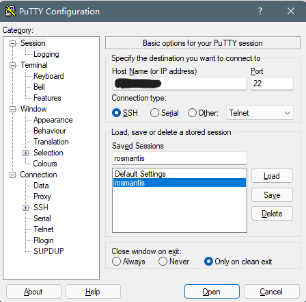

基于腾讯云的博客服务器部署
服务器属性
因为是个人博客，访问流量不大，选择了腾讯的 30 多块的服务器，配置如下：
- CPU：1核
- 内存：2 GB
- 系统盘：50 GB SSD
- 流量：500 GB/月
- 带宽：5 Mbps
- 操作系统：CentOS 7.8 64bit
由于操作系统为 CentOS，和其他版本的 Linux 不同，所以下文安装软件使用 yum 而不是 apt-get
服务器用户配置
腾讯云官方直接操作
发现直接使用腾讯云服务器管理的重置实例密码就能完成登录了…指定用户名然后手动设置密码，非常简单，搞了额外操作的我像个憨憨。。。我搞的额外操作写在下面。
其他参考操作
由于服务器使用的是镜像盘，刚开始登录时不是用的自己的用户名和密码登录，所以这里删除其他所有用户，新建自己的用户。
执行之后的操作，需要切换到 root 用户，首先重置 root 用户的密码：
1 | |
然后切换至 root 账号，输入密码：
1 | |
创建自己的账户并修改密码：
1 | |
连接服务器
如果直接使用服务器方配置SSH 连接服务器，直接跳过此大节。
本地为 Windows 客户端，选择 PuTTY 作为软件连接远端服务器。
以下操作需要通过腾讯云远程登录到服务器进行服务器操作。
安装依赖包
1 | |
启用SSH
1 | |
安装 PuTTY
PuTTY 可以从 官网 下载，这里选择 64-bit x86 的。
IP 输入自己服务器的 IP，端口选择通用设置 22，Saved Sessions 里面填写会话名称 (自己随便定义)。
无密码登录
如果想使用 SSH Key 连接，每次不输入密码，需要本地生成 SSH 私钥和公钥对，输入以下命令：
1 | |
然后使用 ssh-copy-id 将公钥复制到远程服务器中，rosmantis 是此时我的用户名，用自己的用户名代替，@后面为服务器 IP：
1 | |
注意： 无密码登录在生成公钥私钥对时不要输入密码，直接 Enter 。
之后通过 PuTTY 客户端直接登录服务器即可，如果想不每次输入自己的用户名和密码，在 PuTTY 桌面客户端属性的目标后面添加 -load "会话名称" -l 用户名 -ssh -pw 密码。
小报错
no supported authentication methods available
1
2
3vi /etc/ssh/sshd_config
# 查找 PasswordAuthentication, 将其改为 yes 并保存退出
systemctl restart sshd # 重启 SSH 服务
给用户添加 root 权限
添加权限需要编辑 sudoers 文件实现，分为以下几个步骤：
1 | |
找到以下内容：
1 | |
在该语句下面添加：
1 | |
退出并还原 sudoers 文件权限：
1 | |
服务器配置
安装依赖包
1 | |
遇到选项输入 y 即可，等待 Complete! 下载安装结束 。
安装 Git
1 | |
SSH 连接
如果之前已经创建过 SSH 连接，则不需要此步骤。
本地使用 git bash 创建密钥
如果已经有本地密钥，不需要再次生成
1 | |
远程拷贝密钥
1 | |
这里注意权限一定要对，authorized_keys 是 600，.ssh 是 700。
本地测试
1 | |
小报错
如果之前有用 SSH 连接过远端服务器，那么本地 Host Key 中会存有历史信息，可能会有以下报错：
1 | |
把 本地.ssh/known_hosts 中有自己 IP 的项都删了再重新连接就行。
安装和配置 Nginx
安装 Nginx
1 | |
小报错
1 | |
手动安装 Nginx，详情参考 CentOS 7安装Nginx教程。
添加软链：
1 | |
将 Nginx 添加为系统服务并设置开机自启动：
1 | |
编辑内容如下：
1 | |
刷新系统服务：
1 | |
其他各类操作：
1 | |
配置云服务器网站文件夹
在云服务器中创建自己的网站目录并设置权限：
1 | |
配置 Nginx：
1 | |
创建 Git 仓库
注意此处不要用 root 账号，使用自己的账号。不然有可能会出现远端无权限访问的情况。
建立 git 仓库并修改权限
1 | |
同步网站根目录：
1 | |
修改权限：
1 | |
刷新一下 Nginx：
1 | |
本地部署
在本地 Hexo 目录下修改 _config.yml 文件中的 deploy 后的 repo：
1 | |
以上完成后，本地执行 Hexo 部署命令 Hexo d -g 即可完成腾讯云服务器上的部署，Over！